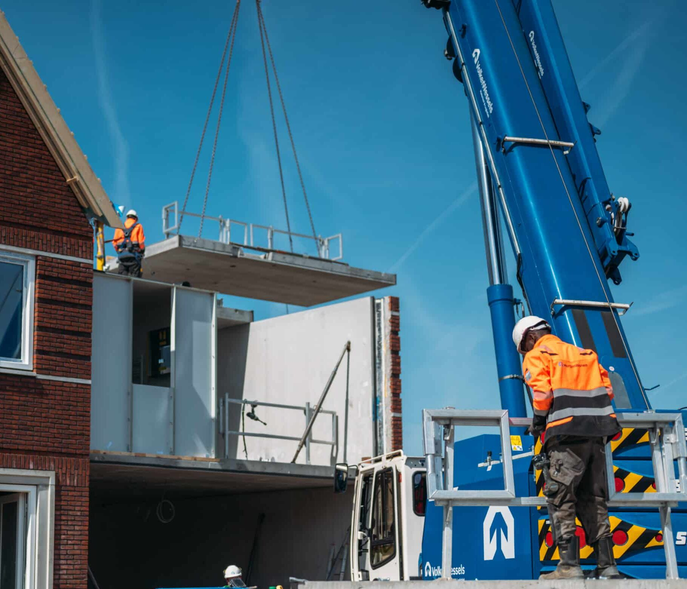

VolkerWessels BVGO-ICT en DIS Group: samen sterk in ERP-beheer
Focus op de business, met vertrouwen in het beheer
Voor het beheer van het Business Central/4PS-landschap werkt het ICT team van VolkerWessels divisie Bouw & Vastgoedontwikkeling, kortweg BVGO-ICT, al jaren samen met DIS Group. Dankzij deze samenwerking blijft het ERP-platform stabiel en betrouwbaar, terwijl het interne team zich kan richten op de verdere ontwikkeling van de organisatie.
Johan Zwoferink, Portfoliomanager Finance & Control bij VolkerWessels BVGO-ICT:
“Een deel van de meldingen lossen we zelf op, maar veel werkzaamheden kunnen we bij DIS neerleggen. We hebben veel vertrouwen in elkaar en weten dat zaken snel en goed worden opgepakt. Daardoor kunnen wij ons focussen op onze eigen prioriteiten.”
Meer dan een leverancier
DIS Group is voor BVGO-ICT meer dan een beheerpartner. Door korte lijnen, kennisdeling en regelmatig overleg is een samenwerking ontstaan die voelt als een verlengstuk van het eigen team.
“Het is geen traditionele klant-leverancier relatie. We sparren samen, denken vooruit en zoeken gezamenlijk naar de beste oplossing. Dat maakt de samenwerking waardevol.”
Praktisch, betrokken en daadkrachtig
Wat VolkerWessels vooral waardeert, is de no-nonsense aanpak van DIS Group. De communicatie is direct, de lijnen zijn kort en afspraken worden nagekomen.
“DIS is laagdrempelig, denkt mee en doet wat het belooft. Er is ruimte voor humor, maar vooral veel deskundigheid. Dat maakt samenwerken prettig en eenvoudig.”
Samen verder bouwen
Met de combinatie van technische expertise en een persoonlijke aanpak ondersteunt DIS Group dagelijks het BVGO-ICT team bij het beheer van Business Central/4PS. Zo blijft het ERP-landschap toekomstbestendig en kan het interne team zich richten op het ondersteunen van de business en het realiseren van verdere groei en optimalisatie.
